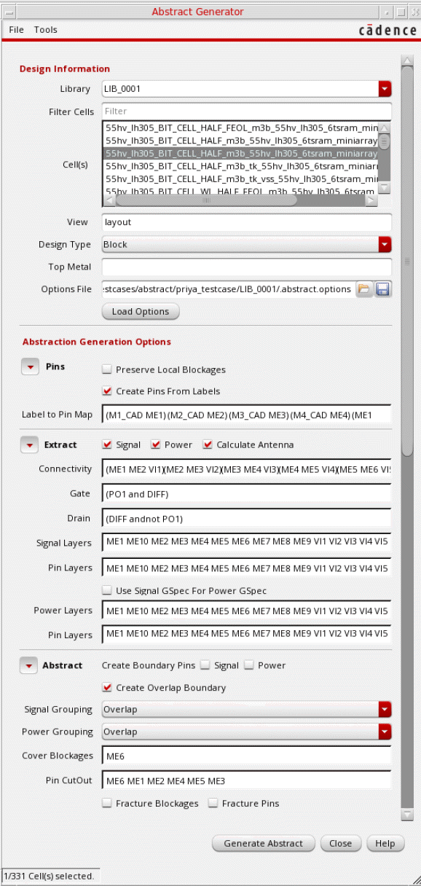
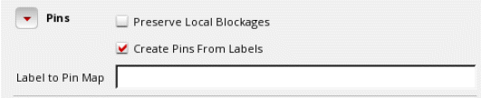
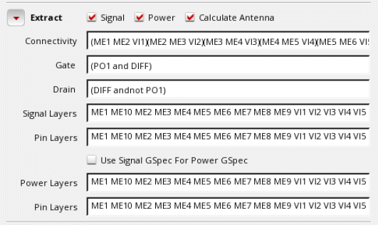
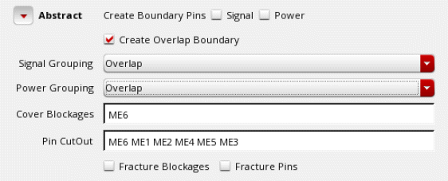

Generating Abstracts
You can load values in the Abstract Generator form, run the Abstract Generator steps and view the results during the abstract generation process. When all the options are loaded, the Abstract Generator form features separate sections for each of the abstract generation steps.
-
In the CIW, choose Tools - Abstract Generator.
The Abstract Generator form is displayed. - Initialize the fields in the Design Information section and load the options file.
-
In the Pins section, you can use the progressive disclosure arrow to reveal or hide the options.
The integrated Abstract Generator preserves local blockages and creates pins from labels during the Pins step.
-
In the Extract section, you can extract new pins by tracing the physical connections starting from pins created in the Pins step. Antenna numbers are also calculated based on the options selected. You can use the progressive disclosure arrow to reveal or hide the options.
- Choose whether you want to extract connectivity information for Signal, Power, or both types of nets.
- Select Connectivity to specify the connectivity between layers. You can specify the layer connectivity without having to add via definitions in the technology file.
- Select Calculate Antenna to create process antenna information for custom blocks and standard cells.
- Select Gate and Drain text boxes to assign layers to antenna regions to identify the gate and drain regions and to enable antenna calculation.
- Select Signal Layers to list all signal layers to be extracted. Select Use Signal GSpec for Power GSpec to extract the geometry specifications for these layers.
- Select Pin Layers to list all the layers on which pins need to be created for signal nets.
- Select Power Layers to list all power layers to be extracted. Select Use Signal GSpec for Power GSpec to extract the geometry specifications for these layers.
- Select Pin Layers to list all the layers on which pins need to be created for power nets.
-
Abstract is the third and final step of the abstract generation process. You can use the progressive disclosure arrow to reveal or hide the options.
- Use Create Boundary Pins to create square pins at the boundary from the extracted pin geometries. You can create boundary pins for Signal nets, Power nets, or both.
- Select Create Overlap Boundary to specify whether a rectilinear PR boundary (overlap) should be generated during abstraction.
- Select Signal Grouping and Power Grouping to control how the pin geometries are grouped for corresponding signal and P/G nets.
- In the Cover Blockages field, specify the layers to be considered while creating cover blockages.
- In the Pin CutOut field, specify the layers on which pin cutouts need to be created. Pin cutouts are applicable for all types of blockages: cover, detailed, and shrink.
- Select Fracture Blockages and Fracture Pins options to generate only rectangular geometries for pins and blockages in the final abstract view.
- When you are satisfied with the options settings, use the above four flow steps to generate abstracts for the selected cells. You can run the steps either one at a time or all at once for any or all of the cells.
- After updating values in the Design Information and Extract sections, click Generate Abstract to run Abstract Generator.
The Abstract Log window is displayed.
Related Topics
Specifying Design Information in the Abstract Generator
Viewing Results in the Abstract Generator Form
Return to top